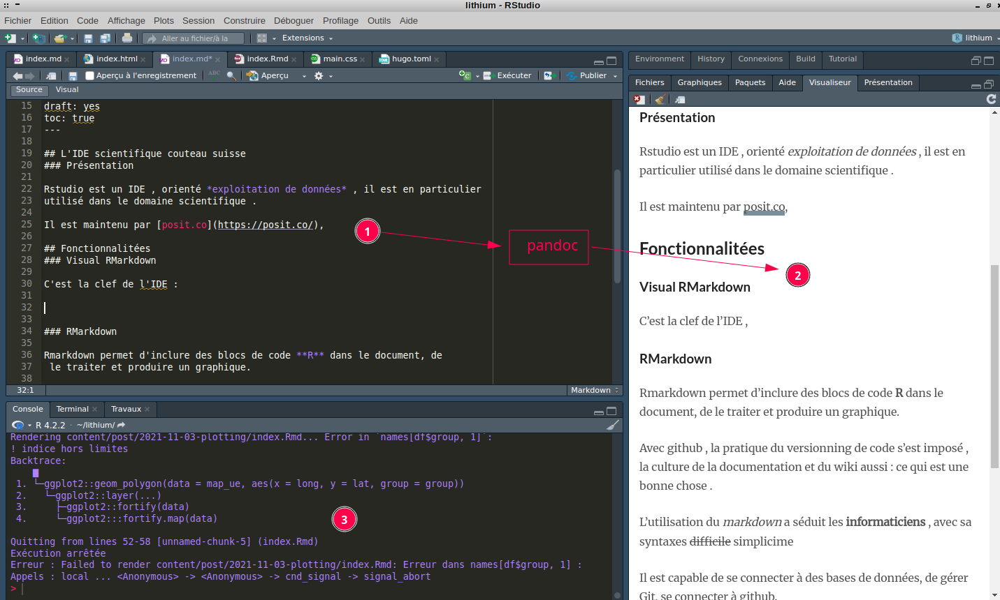
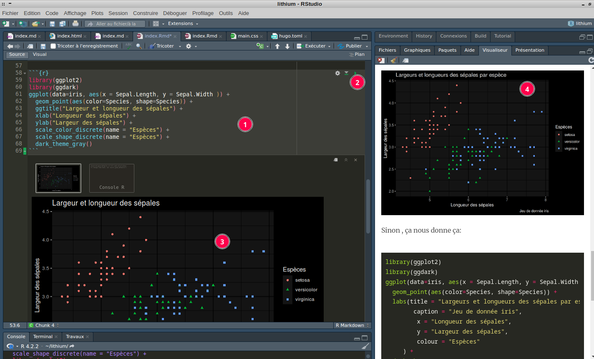
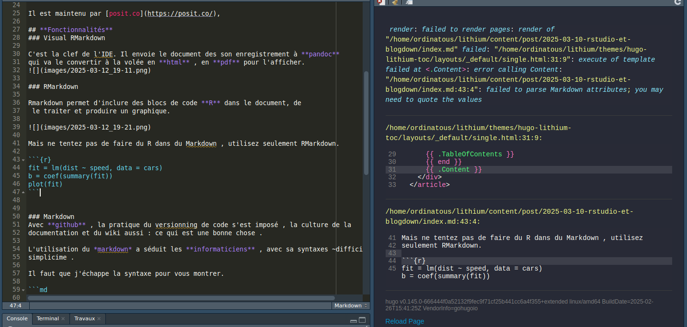

L’IDE scientifique couteau suisse
Présentation
Rstudio est un IDE , orienté exploitation de données , il est en particulier utilisé dans le domaine scientifique .
Il est maintenu par posit.co,
Fonctionnalités
Visual RMarkdown
C’est la clef de l’IDE. Il envoie le document des son enregistrement à pandoc qui va le convertir à la volée en html , en pdf pour l’afficher. 
RMarkdown
Rmarkdown permet d’inclure des blocs de code R dans le document, de le traiter et produire un graphique.

Mais ne tentez pas de faire du R dans du Markdown , utilisez seulement RMarkdown. 
Markdown
Avec github , la pratique du versionning de code s’est imposé , la culture de la documentation et du wiki aussi : ce qui est une bonne chose .
L’utilisation du markdown a séduit les informaticiens , avec sa syntaxes difficile
simplicime .
Il faut que j’échappe la syntaxe pour vous montrer.
# Titre 1
## Titre 2
### Titre 3
**gras**
~barré~
_souligné_
* liste à point
* liste à point
1. liste numérotée
2. liste numérotée
gras
souligné
barré
- liste à point
- liste à point
- liste numéroté
- liste numéroté
blogdown Générateur de blog
Yihui Xie créatrice du template hugo-lithium travaillait pour posit.co.
Elle a développé à priori en partie Rstudio , et a créé le package blogdown , et plusieurs autres, ce package exploite hugo le moteur de blog écrit en go . Yihui annonce son départ aprés 10 ans chez posit.
Il est capable de se connecter à des bases de données, de gérer Git, se connecter à github.
Il a sa console R , un terminal